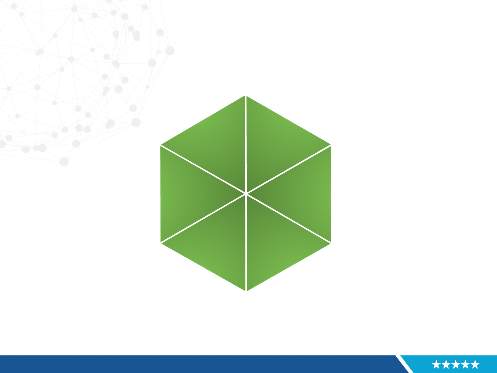

Self Service Drivers
• Problem Statements
• Programs need a smooth transition from build-it to buy-it,
leveraging Managed Services and COTS (e.g. XaaS) solutions.
• Increasing user demands (number of users and uptime
requirements) have resulted in increased complexity and are driving
costs of development, deployment and support higher.
• Costs resulting from system unavailability are significantly higher
than they used to be further reinforcing the need for production
environment stability and maintainability.
• Without appropriate tools it is difficult to accurately validate Service
Level Agreements.
• Programs are looking for consistent solutions to leverage existing
legacy resources to meet demands of expanding, flexible service
capabilities.
• Inability to support multiple versions of a service means
coordinated releases are required among users of the service.

Self Service Goals
• Develop enabling infrastructure (process, people and products) to facilitate
Managed Services and COTS (e.g. XaaS) acquisitions.
• Improve consistency, quality, effectiveness and efficiency by all ES
Providers to deliver a multi-channel customer experience. (i.e. The
customer is the customer of ES, not simply of an ES Provider).
• Extend hours of service beyond when people are “available.”
• Focus on speed of response and ability to effectively reduce unnecessary
blockers.
� Remove “red tape” or other unnecessary blockers.
� Leverage online and mobile solutions.
• Minimize the effects of bad customer experiences.
• Transform customer experience into cost savings or revenue opportunities.
• Leverage solutions by turning them into reusable assets (i.e. don’t solve the
same problem twice).
• Measure results for continuous improvement.

How do we define the Customer Experience
2
?
1. Promotion
Management
6. Customer
Value
Analytics
2. Product
Strategy
3. Customer
Service
4. Pricing
5. Supply
Management
Customer
Experience
How do we communicate our pursuit of
excellent service to our customers and
inform them about our products?
How do we develop products that
are wanted and needed by our
customers?
How do we deliver customer service
in the way our customers define it?
How does our pricing model reflect
the value proposition as our customer
sees it?
How can we deliver faster,
better and cheaper?
How do we know what the
customer thinks?
2
The Value of Customer Experience, Quantified by Peter Kriss
Copyright © Harvard Business Review, 2015. All rights reserved.

How does Self Service Impact the Customer Experience?
1. Promotion
Management
6. Customer
Value
Analytics
2. Product
Strategy
3. Customer
Service
4. Pricing
5. Supply
Management
Customer
Experience
Self Service means customers can view
SLAs and service / product offerings in a
published catalogue.
Self Service means we respond to
customer requests proactively by
working with customers to meet
their service needs. New services
or service enhancements delivered
to a customer become part of the
product inventory.
Self Service means we publish Play
Books and guidance in a growing
knowledge base library so customers
have immediate access to solutions.
Self Service means we provide a
pricing model that makes sense to
sustain a growing capability of
products and services for our
customers. Pricing is more
predictable so our customers can
budget accordingly.
Self Service means we
provide our teams with
reusable solutions to
promote coordinated
releases and flexible
adaption to new version
releases.
Self Service means we
continuously obtain customer
feedback and adapt to what our
customers want.